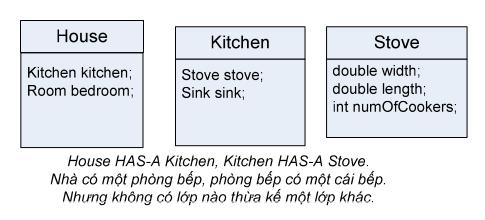

Như đã trình bày trong các chương trước, khi một lớp kế thừa từ một lớp khác, ta nói rằng lớp con chuyên biệt hóa lớp cha. Nhưng liệu khi nào thì nên chuyên biệt hóa một lớp khác?
Nhớ lại rằng lớp cha là loại tổng quát, còn lớp con là loại cụ thể và chuyên biệt, là loại con của lớp cha. Nhìn từ khía cạnh khác, tập hợp các đối tượng mà lớp con đại diện là một tập con của các đối tượng mà lớp cha đại diện. Do đó, để đưa ra lựa chọn đúng đắn cho vấn đề nên hay không nên để lớp X là lớp chuyên biệt hóa lớp Y, ta có một phương pháp hiệu quả: kiểm tra quan hệ IS-A, nghĩa là xem thứ này có là thứ kia hay không.
Để xem X có nên là lớp con của Y hay không, ta đặt câu hỏi theo dạng "Nếu phát biểu một cách tổng quát rằng loại X là một dạng/thứ/kiểu của loại Y thì có lý hay không?". Nếu câu trả lời là "Có", thì X có thể là lớp con của Y.
Ví dụ: Tam giác là một hình (Triangle IS-A Shape)? Đúng. Mèo là một động vật họ Mèo (Cat IS-A Feline)? Đúng. Xe tải là một phương tiện giao thông (Truck IS-A Vehicle)? Đúng. Nghĩa là, Triangle có thể là lớp con của Shape, Cat có thể là lớp con của Feline, Truck có thể là lớp con của Vehicle.
Ta xét tiếp: Phòng bếp là một cái nhà (Kitchen IS-A House)? Chắc chắn sai. Ngược lại thì sao? Nhà là một phòng bếp (House IS-A Kitchen)? Đúng là có một số người vì phong tục hay điều kiện sống mà ngôi nhà của họ chỉ có một phòng duy nhất nên đó vừa là nơi nấu bếp vừa là phòng cho nhiều chức năng khác. Tuy nhiên, các trường hợp đó chỉ là "một số", nên câu trả lời tổng quát vẫn là "Sai". Cho nên, Kitchen không thể là lớp con của House hay ngược lại.
Phòng bếp và nhà rõ ràng có liên quan đến nhau, nhưng không phải qua quan hệ thừa kế mà là một quan hệ chứa – HAS-A. Câu hỏi ở đây là: Nhà có chứa một phòng bếp hay không (House HAS-A Kitchen)? Nếu câu trả lời là "Có", điều đó có nghĩa House có một biến thực thể kiểu Kitchen. Nói cách khác, House có một tham chiếu tới một đối tượng Kitchen, chứ House không chuyên biệt hóa Kitchen hay ngược lại.
Quan hệ HAS-A trong Java được cài đặt bằng tham chiếu đặt tại đối tượng chứa chiếu tới đối tượng thành phần. Quan hệ HAS-A giữa hai lớp thể hiện một trong ba quan hệ: kết hợp (association), tụ hợp (aggregation) và hợp thành (composition) mà các tài liệu về thiết kế hướng đối tượng thường nói đến. Giữa hai lớp có quan hệ kết hợp nếu như các đối tượng thuộc lớp này cần biết đến đối tượng thuộc lớp kia để có thể thực hiện được công việc của mình. Chẳng hạn, một người nhân viên chịu sự quản lý của một người quản lý, ta có quan hệ kết hợp nối từ Employee tới Manager, thể hiện ở việc mỗi đối tượng Employee có một tham chiếu boss kiểu Manager. Hợp thành và tụ hợp là các quan hệ giữa một đối tượng và thành phần của nó (cũng là đối tượng). Khác nhau ở chỗ, với quan hệ hợp thành, đối tượng thành phần là phần không thể thiếu được của đối tượng chứa nó, còn với quan hệ tụ hợp thì ngược lại. Ví dụ, một cuốn sách bao gồm nhiều trang sách và một cuốn sách không thể tồn tại nếu không có trang nào. Do đó giữa Book (sách) và Page (trang) có quan hệ hợp thành. Thư viện có nhiều sách, nhưng thư viện không có cuốn sách nào vẫn là một thư viện, nên quan hệ giữa Library (thư viện) và Book là quan hệ tụ hợp. Java không có cấu trúc nào dành riêng để cài đặt các quan hệ tụ hợp hay hợp thành. Ta chỉ cài đặt đơn giản bằng cách đặt vào đối tượng chủ các tham chiếu tới đối tượng thành phần, hay nói cách khác là phân rã thành các quan hệ HAS-A, chẳng hạn quan hệ hợp thành giữa Book và Page có thể được phân rã thành 'Book HAS-A ArrayList<Page>' và nhiều quan hệ 'ArrayList<Page> HAS-A Page'.
Các ràng buộc khác được đảm bảo bởi các phương thức có nhiệm vụ khởi tạo hay sửa các tham chiếu đó.
Quay lại quan hệ IS-A, có một điểm cần lưu ý: quan hệ thừa kế IS-A chỉ có một chiều. Ví dụ: "Tam giác là một hình" là phát biểu có lý, nhưng khẳng định theo chiều ngược lại, "Hình là một tam giác", thì không đúng. Có nhiều hình là hình tam giác, nhưng cũng có vô số hình không phải hình tam giác.
Thực ra, lưu ý trên là hiển nhiên, nếu ta nhớ đến mô tả về lớp con tại mục trước: Lớp con chuyên biệt hóa lớp cha.
Đến đây, chúng ta chưa kết thúc câu chuyện về quan hệ thừa kế. Chương sau sẽ tiếp tục trình bày về các vấn đề hướng đối tượng. Một số giải pháp thiết kế trong chương này sẽ được xem lại và cải tiến.